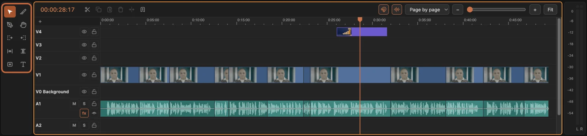

Timeline
The timeline holds your recording and everything placed over and under it. The tools sit on its left edge, the zoom and the snapping above it, the sound meter at its right.

Tracks
- V1: your recording, cut into pieces by the automatic cut and by you.
- V2 and up: what goes over it: shots, titles, animations, pictures. Higher tracks cover lower ones.
- V0 Background: under the recording, for a background behind a picture made smaller.
- A1: the speech. A2: sound effects. A3: music.
Each track has buttons to hide, mute, solo and lock it; sound tracks have fx for their effects. The + above the track names adds a track (Add Video Track, Add Audio Track).
Tools
The keys below are Kilnframe's own; with another program's keys chosen in Settings, they follow that program.
| Tool | Key | What it does |
|---|---|---|
| Select | V | Pick a piece or a clip; drag a clip to move it, to another track too. |
| Razor | C | Cut a clip or the recording where you click. |
| Hand | H | Drag the timeline along. |
| Pen | P | Click a sound track to add a volume point. |
| Rate Stretch | R | Drag an edge: longer plays slower, shorter plays faster; the sound keeps its pitch. |
| Roll | T | Drag the joint between two pieces: one gets longer as the other gets shorter. |
| Slip | Y | Show an earlier or later part of a clip, in the same place and length. |
| Track Select Forward | A | Pick everything from where you click on, to move it all together. |
| Text | ⇧ T | Click in the Program viewer to write a new title there. |
= and - zoom in and out, \ shows the whole cut (Fit). N turns snapping on and off: clips catch on edits, markers and the playhead.
The clip menu
Right-click a clip for, among others: Speed…, Reverse, Freeze Frame, Split at Scene Changes, Replace With…, Copy Settings and Paste Settings, Make Compound Clip, Show in Media and Delete and Close the Gap (Ripple Delete). An item that does not apply to the clip is greyed, with the reason beside it.
Transitions
At a cut, Add Cross Dissolve (⌘ D) or Add Dip to Black (⇧ ⌘ D). Cross Dissolve at Every Cut does them all at once, Remove All Transitions takes them away. On sound, Add Sound Crossfade.
Markers and beats
- M adds a marker at the playhead; ⇧ M goes to the next one. A marker can be orange, blue, green, red or purple and can carry a note.
- Find Beats marks the beats of a music clip, so you can cut to them.
- Close All Gaps pulls the clips together where empty space is left.
Follow the playhead
Follow the playhead, above the tracks: Page by page turns the view a page at a time, Smooth keeps the playhead still and moves the clips under it, Off leaves the view where it is.